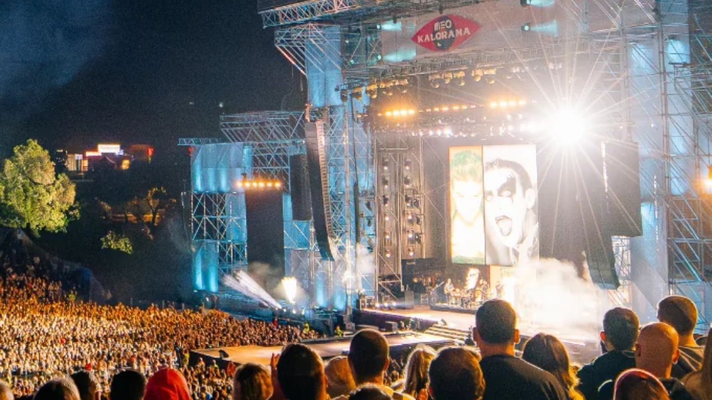

Festivals · Music
MEO Kalorama 2027
- Dates
- –
- Venue
- Parque da Bela Vista, Lisbon
- Location
- Lisbon, Portugal
- Format
- In-person
- Category
- Music
- Industry
- Music festival
- Organiser
- MEO Kalorama
- Official website
- https://meokalorama.pt/en/meo-kalorama-returns-in-2027-on-august-26-27-and-28/
About
Dates are local to the host city (Western European Time, UTC+0 / UTC+1 in summer).
Topics: indie, rock, electronic.
Official 2027 announcement recalls a previous edition that “welcomed more than 110,000 people to Parque da Bela Vista.” That is not a clearly worded 2027 expected-attendance figure, so it is not stored as organiser attendance. Ranked by our estimated size tier 'very large' (100,000+ attendees/visits).